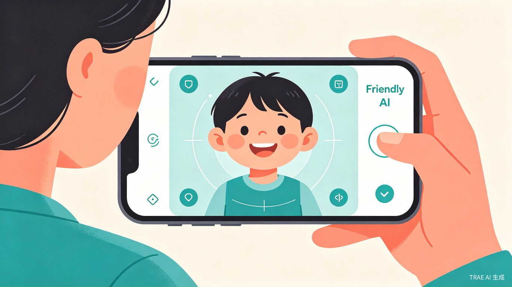
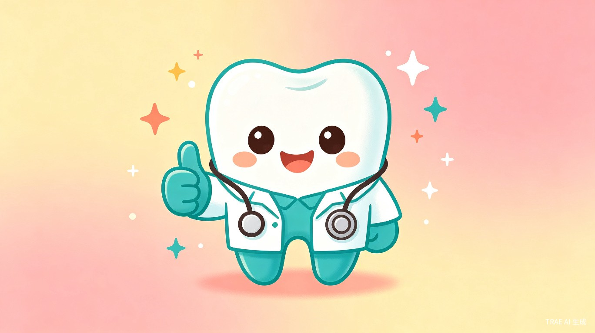
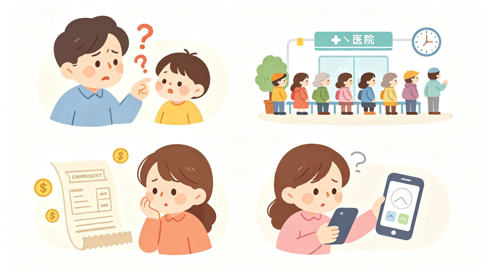
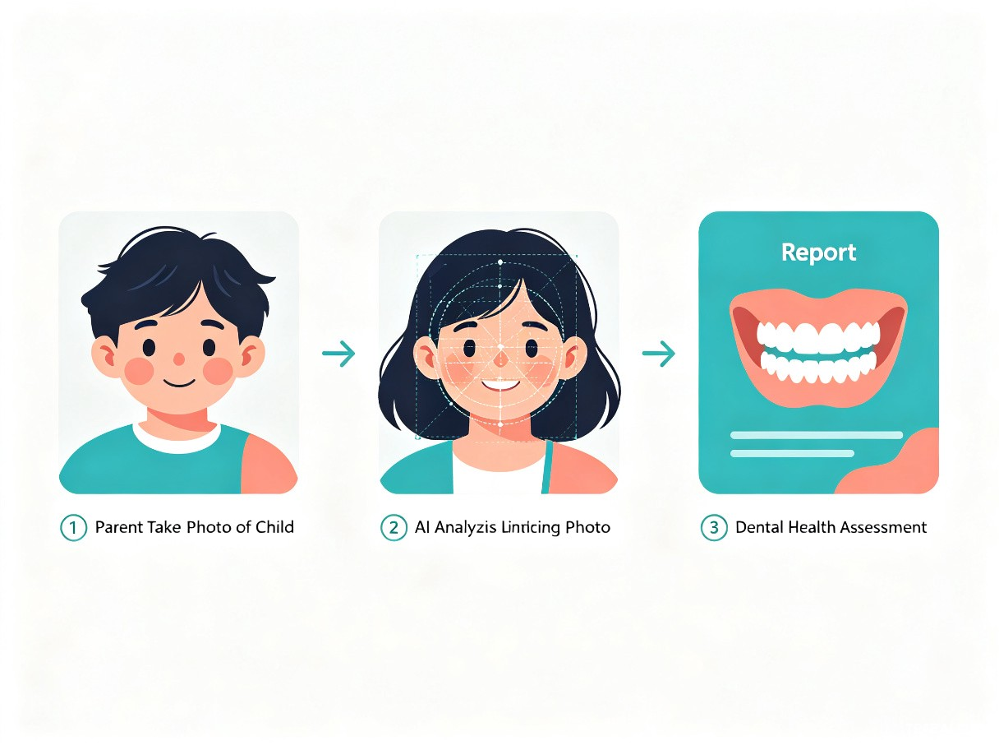
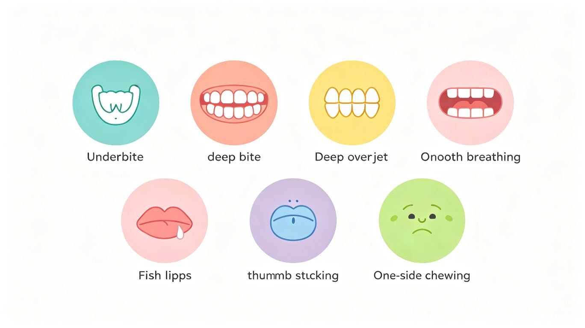
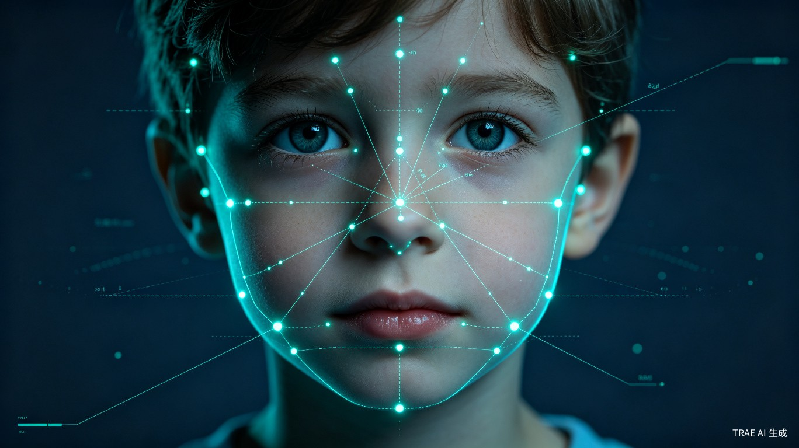
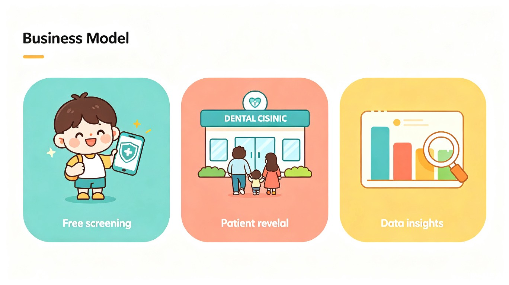

拍照即检，3 秒出报告 — 让每位家长成为孩子口腔健康的第一道防线

中国儿童错颌畸形（牙齿排列不齐、反颌、深覆合等）的患病率高达 72%，替牙期（6-12 岁）更是高达 71.2%。然而，我国儿童错颌畸形的干预率仅为 0.95%，与美国存在 8 倍以上的差距[1]。
超过 80% 的家长无法通过肉眼判断孩子是否存在反颌、深覆合、口呼吸等问题，往往错过 6-12 岁的黄金矫治窗口期。
全国经过规范训练的正畸医生不足万人，每 10 万人中不足 0.7 名，基层尤其短缺[1]。
一线城市儿童正畸平均花费超万元，偏远地区就医不便，经济负担重。
市面上缺乏面向 C 端家长的、基于面部照片的口腔问题初筛产品。

无需专业设备，手机拍照即可。微信小程序形态，家长无需下载 APP，打开即用。
AI 模型推理 + 面部关键点检测，3 秒内输出可视化筛查报告。
由口腔副教授医师提供专业标注与知识体系，AI 模型经临床数据训练验证。
风险等级明确标注，一键匹配附近口腔医疗机构，缩短从发现到就诊的路径。

内置拍照引导系统，通过实时面部检测框和语音/文字提示，引导家长以正确角度拍摄孩子的正面照（自然放松、直视镜头）和侧面照（90 度侧颜、自然咬合）。自动检测照片质量（模糊、遮挡、光线），不合格照片即时提示重拍。
基于面部关键点检测与深度学习分类模型，对以下口腔问题进行风险评估：
侧面下颌前突、面中部凹陷
下面高比例、唇间隙分析
上唇突出度、突面型分析
唇间隙宽度、唇闭合状态
唇厚度、外翻程度
咬唇、吐舌致面部异常
面部不对称、下颌偏斜

筛查报告包含：风险等级（低/中/高）、问题标注（在面部照片上标注关注区域）、通俗解释（用家长能理解的语言解释每个问题）、就医建议（是否需要就诊、紧急等级、推荐科室）。
基于用户地理位置，推荐附近具备儿童正畸能力的口腔医疗机构，提供科室信息、医生资质、预约入口，实现"筛查 → 就医"的闭环。
支持建立儿童口腔健康档案，定期复筛追踪面型变化趋势，生成成长对比报告，帮助家长和医生动态掌握孩子的口腔发育状况。

flowchart TB
A[家长拍照上传] --> B[图像质量检测]
B -->|不合格| A
B -->|合格| C[面部关键点检测
MediaPipe Face Mesh 478点]
C --> D[软组织测量计算
面部比例 / 唇间隙 / 下颌角度]
D --> E[深度学习分类模型
ResNet50 + 迁移学习]
E --> F[风险评估引擎
多维度综合评分]
F --> G[可视化报告生成
热力图 + 文字解读]
G --> H[就医导航推荐]
原生小程序开发，集成 MediaPipe Face Mesh 实现实时面部关键点检测，拍照引导与质量检测在前端完成。
MediaPipe 478 点关键点 → 软组织测量 → ResNet50 迁移学习分类，针对亚洲儿童面部特征优化。
Serverless 架构，模型推理部署在 GPU 云实例上，支持高并发筛查请求。
儿童照片加密传输与存储，符合《个人信息保护法》，支持家长随时删除数据。
2024 年中国龋齿检测辅助系统市场规模约 125 亿元，同比增长 15.7%。2023 年中国儿童齿科与口腔护理市场总规模达 231.5 亿元，较 2020 年增长 78.3%[5]。全球口腔 AI 市场以超过 21% 的年复合增长率扩张。
| 维度 | 小牙卫士（本方案） | 青岛口腔智慧诊断 | 深圳 AI 筛查平台 | DentalMonitoring |
|---|---|---|---|---|
| 产品形态 | C 端小程序 | C 端小程序 | B 端学校平台 | B 端诊所 SaaS |
| 筛查方式 | 面部照片 2-3 张 | 口内照片 5 张 | 口内照片 | 口内照片（专用设备） |
| 筛查范围 | 错颌畸形 + 口呼吸 + 不良习惯 | 龋齿等 7 种病灶 | 龋齿 + 窝沟封闭 | 130+ 种正畸状况 |
| 目标用户 | 家长（C 端） | 居民（C 端） | 学校/政府（B 端） | 诊所/医生（B 端） |
| 核心差异 | 面部照片初筛 + 就医导航 | 口内照片 + 政府背书 | 校园批量筛查 | 正畸远程监控 |
基础筛查免费。深度报告、健康档案、定期复筛追踪、专家在线咨询等增值功能按月/年订阅收费。
向口腔诊所/医院精准导流患者，按有效到诊收取佣金。合作机构可获得品牌展示和患者管理工具。
脱敏数据分析报告服务于口腔行业（患病率趋势、区域热力图），为医疗机构选址和产品研发提供数据支撑。

| 指标 | 保守估计 | 乐观估计 |
|---|---|---|
| 目标用户基数（0-14 岁儿童） | 2.5 亿 | 2.5 亿 |
| 首年渗透率 | 0.5% | 2% |
| 首年用户数 | 125 万 | 500 万 |
| 付费转化率 | 3% | 8% |
| 付费用户 ARPU（元/年） | 99 | 199 |
| 订阅收入（万元/年） | 371 | 7,960 |
| 导流佣金收入（万元/年） | 500 | 3,000 |
完成小程序基础框架、拍照引导、反颌/深覆合两项核心筛查功能，使用预训练模型 + 少量标注数据进行 Demo 演示。提交大赛初赛。
扩展至 7 项筛查功能，完善可视化报告和就医导航，与 2-3 家口腔医院合作采集训练数据，模型迭代优化。提交大赛复赛。
健康档案功能上线，用户体验优化，安全合规审计，内测 500+ 用户收集反馈。提交大赛决赛。
小程序正式发布，启动市场推广，建立 B 端合作网络，持续迭代 AI 模型。
创始人/核心成员为口腔副教授医师，拥有丰富的临床正畸经验，可提供专业标注、知识体系和医学审核。
基于 TRAE Work 进行全流程开发，利用 AI 辅助编程大幅提升开发效率。深度学习模型方案经过学术验证。
产品灵感来源于临床实践中大量"来晚了"的病例，直击家长认知盲区和就医痛点。
微信小程序形态无需下载，传播成本低。面部照片筛查无需专业设备，天然适合社交传播和裂变增长。
小牙卫士以"拍照即检"的极简体验，将口腔副教授的专业经验转化为 AI 能力，让每位家长都能在 3 秒内了解孩子的口腔健康状况。产品填补了 C 端儿童口腔初筛市场的空白，具有明确的社会价值（提升早期干预率、促进医疗公平）和清晰的商业路径（增值订阅 + 机构导流 + 数据服务）。
我们相信，AI 不应只是技术竞赛，更应服务于真实的人。
一个简单的拍照动作，就可能改变一个孩子的一生。